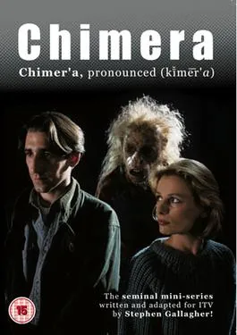

The genetics
Genetic engineering is the core of this ITV miniseries, adapted by Stephen Gallagher from his 1982 novel. A fertility clinic serves as cover for a secret, state-funded project to create human-chimpanzee hybrids, using patients as surrogate mothers, with the aim of producing a slave species for labour, war and medical research. Dr. Jenner is a scientist serving government interests with no regard for his creation, whom he keeps caged, mutilates and finally orders to be dissected; his colleague Liawski is ashamed but silenced, and another colleague is fascinated and carries on the work. Chad, the hybrid, is the tragic figure of the story, and the drama focuses on the cruelty and the official cover-up rather than the science. Human-chimpanzee hybrids have never been produced, and such experiments are banned on ethical grounds. In the United States the series was re-edited and released as Monkey Boy.
How genetics is portrayed
- Overall portrayal of genetics
- negative Genetic engineering appears as a secret state project to breed slaves, carried out with cruelty and protected by a cover-up; the ending, with the evidence suppressed and new hybrids in incubators, is bleak.
- Outcome of the genetic intervention
- negative The hybrid programme leads to Chad's caged, mutilated life, the massacre of the clinic staff, the murder of the farmer couple and Chad's own death, while the conspiracy survives and multiplies the hybrids.
- Dr. Jenner
- villain Aim: military, power (negative). Under cover of a fertility clinic and with government funding, he creates a human-chimpanzee hybrid as the basis of a slave species for labour, war and medical experiments, cuts the infant's vocal cords and orders him dissected alive. The series stages him as cruel, and Chad kills him.
- Hennessey
- villain Aim: military, power (negative). The government official funds the hybrid programme, hands the manhunt to the army, intercepts Peter's videotapes and, at the end, oversees a facility full of infant hybrids. He is the manipulative face of the cover-up.
- Diane Rhomer
- villain Aim: curiosity, military (negative). Fascinated rather than horrified by the birth tape, she ends up continuing the work for Hennessey, showing him dozens of incubated hybrids in the final scene. The series uses her as the sinister sign that the programme goes on.
The story
Nurse Tracy Pickford leaves London for a job at the Jenner Clinic, a private fertility clinic in rural Cumbria, where a locked outbuilding and secret meetings make her suspicious. One night an unseen creature kills the clinic's staff, including its founder Dr. Jenner, and Tracy too. Her boyfriend, the journalist Peter Carson, arrives to find the police sidelined by a government official, Hennessey, who hands the manhunt to the army. With Alison Wells, a researcher who survived, Peter learns from Jenner's former colleague Dr. Liawski that Jenner, funded by Hennessey, created a human-chimpanzee hybrid as the first of a new species for slave labour, military use and medical experiments. The hybrid, Chad, had been kept caged for years and killed the staff when Jenner ordered him dissected. Hiding on a farm, Chad befriends two children. Peter and Alison try to expose him to the public, but he is shot dead. In the final scene, a facility holds dozens of infant hybrids.